|
2005 Open Show Judge Mrs Jane Bishop (Dyrham) |
|
1. MINOR PUPPY DOG No entry |
|
|
2. PUPPY DOG (4)
1st Mr S.J & Mrs Y Wale - Wansledale Magic Star:
2nd Mr A.J. & Mrs P.J. Beckwith Swannery Zeus:
3rd Mr & Mrs P Carlin - Wynacre Lord of the Dance
for Sodalitas
|
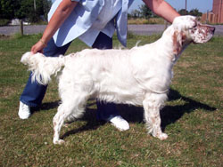 |
|
3. SPECIAL VETERAN DOG 7 TO 9 YRS ((3)
1st Mr A.J. & Mrs P.J. Beckwith IR/Dutch/Lux SH CH
Tattersett Time is Time:
2nd Mr T.M. Cooper Earldoms Master of Menace
|
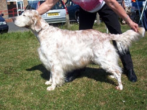 |
|
4. SPECIAL VETERAN DOG 10 & OVER(3)
1st Mrs J Pearce - Westonfields Wooster:
2nd Mr V.N. & Mrs L.A. Offer - Ownways Pacific Blue.
|
|
|
5. JUNIOR DOG (2).
1st Mrs P.J. Malins - Taurkel Gold Quest:
2nd Mrs C.J. Tucker - Walshaw Party With Me:
3rd Mr A.J. & Mrs P.J. Beckworth Swannery Zeus
|
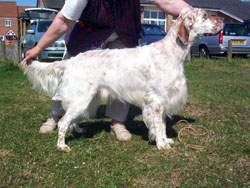 |
|
6. SPECIAL YEARLING DOG (2)
1st Mrs B.R. Wells - Hollygrove Story Teller at Ritanor |
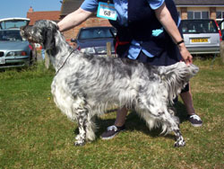 |
|
7. MAIDEN DOG (2)
1st Mr S.J & Mrs Y Wale - Wansledale Magic Star |
|
|
8. NOVICE DOG (3)
1st Mr S.J & Mrs Y Wale - Wansledale Magic Star:
2nd Mrs C.J. Tucker - Walshaw Party With Me:
3rd Mr A.J. & Mrs P.J. Beckwith Swannery Zeus |
|
|
9. GRADUATE DOG (3)
1st Mr & Mrs D. Kirsh - Soulmate of Sorbus:
2nd Mr P. & Mrs J.M. Dunks - Sameleen City Gold
|
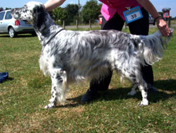 |
|
10 POST GRADUATE DOG (7)
1st Mr & Mrs D. Kirsh - Shining Star of Sorbus:
2nd Mrs J. Day - Decoverly Celtic Venture:
3rd Mrs J.J. Young Ownways Money Talks:
4th Mrs M.R. Young - Mariglen Romantic Scene at Brookedge:
5th Mrs F Holland - Mandyset Dirty Dancing
|
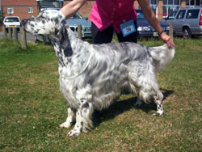 |
|
11 LIMIT DOG (5)
1st Mrs J Day - Decoverly Sandpiper:
2nd Mr C.J. & Mrs J Brayshaw - Carnagy Manhatten:
3rd Mr T,M, & Mrs L.A. Cooper - Tremorgan Prince
of Wales to Settrenda:
4th Mrs M.E. Richards - Rubuscott Its All Over Now:
5th Mrs A Reith - Kenmillen Crusader
|
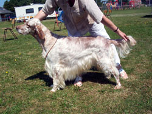 |
|
12 OPEN DOG (7)
1st Mr & Mrs P Mellish - Ownways Moving Shadow to Monbrec:
2nd Mrs F & Miss F Tompsett - Radbrooks Break Away:
3rd Mr A.J. & Mrs P.J. Beckwith - GIB/DUTCH/LUX/
Sh CH Mariglen Force The Pace with Becksett:
4th Mrs J Pearce - Westonfield Another Blue:
5th Mr S.V. & Mrs A Offer - Harlowfield Lammergeyer |
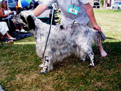 |
|
13. SPECIAL BEGINNERS DOG (2)
1st Mrs F. Holland - Mandyset Dirty Dancing
|
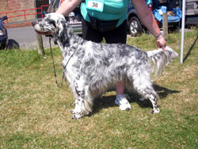 |
|
|
BEST DOG Mr & Mrs P Mellish - Ownways Moving
Shadow to Monbrec
RESERVE BEST DOG Mrs J Day - Decoverly Sandpiper
BEST PUPPY DOG Mr S.J & Mrs Y Wale - Wansledale
Magic Star
BEST VETERAN DOG Mr A.J. & Mrs P.J. Beckwith
IR/Dutch/Lux SH CH Tattersett Time is Time
Michael Winch Special Yearlings Memorial Stakes Dog
Or Bitch Judge Mrs Vera Lyons (Mirrlees) |
|
1st Mr M.J. & Mrs R Aldridge - Salisbury Plain
Babe at Fleckers:
2nd Mrs B.R. Wells - Hollygrove Story Teller at Ritanor:
3rd Mrs P.J. Malins - Taurkel Gold Quest:
4th Mr A.J. & Mrs P.J. Beckworth Swannery Zeus:
5th Mrs M.A Attwood - Swannery Blue Velvet |
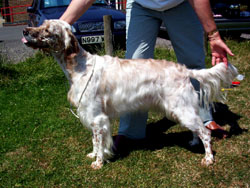 |
|
Lesley Allan-Scott Special Open Memorial Class Dog
or Bitch Judge Mrs Vera Lyons (Mirrlees) |
|
1st Mrs S & Mr D.
Oliver - Wansleydale Songbird at Bramstorm
: 2nd Young - Mariglen Romantic Scene at Brookedge:
3rd Mrs V. Cozens - Earldoms Destinys Child:
4th Mr & Mrs D. Kirsh - Shining Star of Sorbus:
5th Mr A.J. & Mrs P.J. Beckwith - GIB/DUTCH/LUX/
Sh CH Mariglen Force The Pace with Becksett
|
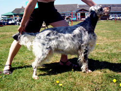 |
|